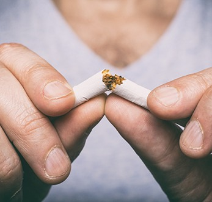

Welcoming New and Existing Patients
When a tooth is lost, you don’t just lose the visible part in your smile, but also the underlying tooth root, which is responsible for supporting your jawbone. This is why we often recommend dental implants in Grafton, WI for our patients, as they are the only option that replaces your tooth’s missing crown and root. Once placed, you can expect optimal function and the best esthetics available in dentistry to date. To schedule your very first consultation, give Sweet Smiles Family Dentistry a call!
Dental implants are made up of three parts, but a titanium post that acts as the new tooth root is technically the only portion of the overall replacement that is considered the “implant.” The other components include the restoration (dental crown, bridge, or denture) that fills the gap in your smile and the abutment (metal attachment) that connects it to the implant. The implant is typically made with titanium because of its strength and biocompatible properties, meaning that it can effectively integrate with your mouth’s tissues to create a strong and stable hold. The end result is a reliable, long-lasting solution that can replace any number of missing teeth.
The dental implant process can vary slightly from patient to patient. It begins with a consultation, wherein we map out your unique treatment plan. Later, you undergo a minimally invasive surgery, wherein we place the dental implants into your jawbone. After your mouth has had sufficient time to heal, we’ll design a custom crown, bridge, or denture to go on top of your dental implants. The entire process may take several months from beginning to end, but it is a worthwhile journey!
Many dental offices offer dental implants, but they ask patients to go to a specialist just to have the surgical portion of the treatment performed. Instead of traveling between dental offices and speaking to multiple doctors, you can get your dental implants placed and restored entirely at Sweet Smiles Family Dentistry. This makes the process much more convenient and stress-free from start to finish.
During your dental implant consultation, we will use imaging technology to get a look beneath your gumline. We will also assess the extent of your tooth loss and the health of your remaining natural teeth. After we have a chance to evaluate the information we gather, we’ll let you know whether you are a candidate for dental implants and what your treatment journey may involve. Feel free to ask questions during your consultation — you are an important part of your dental team!
The dental implant surgery usually doesn’t take more than a couple of hours. During it, we create small incisions in the gums and then insert the implants into the jawbone. Then we close the incisions and send you home to begin the healing process.
We make every effort to ensure patient comfort during the implant placement surgery. Local anesthesia, as well as sedation, can help you to stay calm, relaxed, and pain-free while we are working in your mouth.
Once the implants are in your jawbone, a process known as osseointegration will begin. Essentially, this means that your jawbone will actually fuse with the implants, enabling them to serve as the sturdiest base possible for your replacement teeth. Osseointegration usually takes at least three to six months. Following osseointegration, you’ll undergo a second minor surgery, wherein we will attach small connector pieces, called abutments, to the tops of your implants.
Dental implant restorations are the crowns, bridges, and dentures that replace the visible portions of your lost teeth. When you are ready to receive your restorations, your dentist will carefully design them with the goal of making them as functional and aesthetically pleasing as possible. After we attach them to your implants, you can begin to enjoy all the benefits of your renewed smile!
The most notable benefits of dental implants in Grafton are their durability and longevity. On average, dental implants are designed to last between 30 years and a lifetime, making them more reliable than bridges and dentures. Additionally, dental implants restore your biting force and keep your jawbone strong moving forward. This helps you eat the foods you want and maintain the overall shape of your face. If you want the most comprehensive solution for replacing teeth, dental implants are by far the best option. Keep reading to learn more about what you can expect when choosing dental implants!
Dental implants are ideal for most adults, including those who have had missing teeth for a long time. It’s also perfect for those who are tired of using a denture that no longer fits properly. Below, you’ll find that dental implants can effectively replace single, multiple, or all teeth in a given arch with relative ease. As long as you have good oral and overall health and enough jawbone tissue, you should be a viable candidate to receive dental implants. During your initial consultation with your dental implant dentist in Grafton, we will examine your smile to determine if can freely move forward with dental implant surgery or if you require preliminary treatment. No matter how we proceed, you can expect a beautiful, healthy, and fully functional smile in the end.
If you are missing any number of teeth, there is a good chance you’ll be eligible to receive dental implants in Grafton. Also, if you’re tired of wearing dentures because of their time-consuming maintenance and instability, you will find permanent prosthetics to give you the look and function you desire.
During your consultation with an implant dentist in Grafton, you can expect our team to consider the following factors when determining how to proceed:
Tooth loss comes in all types. Fortunately, dental implants are considered to be the gold standard for tooth replacement.
Even one missing tooth can wreak havoc on your ability to eat, speak, and smile. Although more than 120 million Americans are living with at least one missing tooth, you can take yourself out of that grouping by choosing dental implants. Replacing a single tooth only requires one implant post topped with metal abutment and a customized porcelain crown. We use porcelain for dental implant crowns because it offers long-term durability while still providing optimal esthetics. This is a more conservative alternative to getting a traditional bridge, which requires the removal of nearby tooth enamel to place.
To replace multiple teeth at a time, we can attach a bridge to a pair of implants. This bridge is specifically customized to fit with dental implants and requires no removal of existing tooth enamel. Overall, dental implants are strong enough to hold the restoration and last for several decades. But even if your teeth are not consecutively missing, we can place an implant partial that works similar to a puzzle piece.
If you need to replace all of your upper or lower teeth, we can place a series of dental implants throughout your jaw so it can hold an implant denture. Implant dentures are smaller, stronger, and fit more comfortably compared to traditional removable prosthetics. They’ll also strengthen your jawbone by providing continuous stimulation and make it possible for you to eat the foods you love without worrying about your prosthetics slipping or falling out of place.
Alternatively, if you have minimal jawbone and prefer to avoid bone grafting, we may be able to use All-On-4 implants. By using only four dental implant posts, we can strategically place and align them along the arch in your mouth for maximum support. We will then place a custom denture on top of your implant posts to provide a secure, functional, and beautiful new smile.
The total cost of dental implants in Grafton largely depends on your specific needs because no two smiles are the same. We consider several factors when replacing your missing teeth, such as the density of your jawbone and oral health. We strive to keep a complete smile affordable for everyone. We’ll help you find the payment solutions you need to invest in the next best thing to your real teeth.
The process of rebuilding your smile will occur in several phases, each with separate costs. This can make it easier to pay for your dental implants because you won’t have to cover the entire amount at once. While every treatment plan differs, you can expect yours to include:
You’ll know exactly what you’ll need to pay before getting started. Rest assured; you won’t be caught off guard by any hidden fees.
One of the biggest influencers to the amount you’ll pay is the number of teeth you’re treating. You’ll be responsible for the cost of each part of your dental implant, depending on your severity of tooth loss, which includes:
Although there are discounted materials, you don’t want to pinch pennies when investing in dental implants. Low-quality implants have a higher risk of failure. Your implant dentist in Grafton will help you choose the best materials for a long-term investment.
Dental implants cost more upfront than traditional treatments, but they are the most affordable overall. You won’t have to pay to have them replaced every few years, like conventional bridges and dentures. Dental implants also improve your oral health by keeping your jawbone strong to avoid a costly restorative treatment down the road.

Your dental insurance won’t cover the entire cost of the treatment; however, you can use your benefits to lower the amount of certain steps in your plan, like the consultation. Your coverage can offset the cost of dental implants until hitting your annual limit. We’ll help you maximize your benefits to keep a complete smile within your budget.
Besides using your dental insurance, we offer other solutions for any out-of-pocket costs, including:
If you are interested in receiving dental implants to replace your missing teeth, you will likely be eligible; however, you may need to undergo one or more preliminary treatments first. From bone grafting and sinus lifts to PRF/PRP treatment and ridge expansion, these can be necessary if your jawbone lacks the necessary stability to adequately support your new teeth. To learn more about which dental implant procedure in Grafton you might need, review the following information and contact us with any questions.
The longer you wait to have your missing teeth replaced, the greater your risk for jawbone deterioration. Because there is no stimulation delivered to a particular area of the bone, it will weaken over time and cause additional teeth to loosen and eventually fall out. If you decide it’s time to do something about your incomplete smile, your dentist may recommend you undergo bone grafting in Grafton, WI. This unique procedure is designed to create a more stable structure for your implants once they are put into place. By placing grafting materials from your own body or that of a donor, we can encourage the new and existing bone to integrate and create a solid base. Once the graft is complete, we will close the gum tissue and allow the healing process to begin, which can take several months.
If you require dental implants in the upper arch of your mouth, you may need a sinus lift in Grafton, WI. Because the sinus cavity is close to your top row of teeth, those that fall out toward the back of the mouth can cause a gap to form. If a dental implant was placed, it would penetrate the sinus cavity. This is why it is necessary to place grafting materials into the gapped area and push the sinuses up. This allows the sinus floor to rise gently and create enough room for the dental implants when it’s time to put them into place.
The healing process for this type of procedure can be lengthy (i.e., 4-9 months) but once you’re fully healed, you can move forward with receiving your new teeth.
Once your dental implants are in place, your body will need to heal and allow osseointegration to take place. The success of your new teeth is ultimately dependent upon the status of your overall health and how easily/quickly your body heals. To ensure a swift and successful recovery, we may recommend PRP/PRF treatment. Known as (Platelet Rich Fibrin or Platelet Rich Plasma), this process is performed by drawing some of your own blood and putting it in a centrifuge. When ready, we will extract the PRF/PRP and place it in the surgical site(s). This will help speed up the healing process and minimize the potential for future infections or complications.
Is your jaw lacking the width necessary to support dental implants in Grafton, WI? If so, you’ll need a ridge expansion. This requires your dentist to divide your bone into inner and outer areas. Creating a small wedge, we will fill it with grafting materials to widen the jawbone and strengthen it over time. We will then be able to position your dental implants into the appropriate areas, ensuring they have enough room to fuse with the new bone. Depending on the severity of your case and whether our team believes it will be successful, there is a slight possibility you may be able to receive your dental implants the same day as your ridge expansion.
Dental implants are successful in the vast majority of cases. Rarely, though, they can fail. This may happen due to issues like infection, failed osseointegration, or certain medical conditions. If you ever believe that something is off with your implants, call us right away. We will assess the situation and recommend your next steps. Hopefully, we will be able to get your smile’s health back on track and allow you to continue enjoying the many benefits of implant-supported tooth replacement.
If you want state-of-the-art dental technology, you won’t need to go far! At Sweet Smiles Family Dentistry, our team is committed to providing only the very best equipment and technological software to ensure longer-lasting results. Because patient satisfaction is what we strive to achieve, your decision to choose dental implants to replace your missing teeth allows us to use advanced dental implant technology in Grafton, WI. From guided dental implant surgery to the ORTHOPANTOMOGRAPH OP300 Maxio from Instrumentarium Dental, we can ensure greater accuracy and precision as well as patient comfort and peace of mind.
Dental implant surgery can be tricky if proper steps are not taken to prepare. The treatment plan is essential, as it provides your implant dentist in Grafton, WI with a clear image of where the implant posts should go during surgery. No dental professional wants to blindly find their way through a patient’s jawbone to identify the appropriate location for a permanent prosthetic. This is why guided dental implant surgery is one of the most pivotal advancements in dental technology.
Using a nearby computer to create a virtual model of your oral cavity, we can pinpoint the exact locations for your dental implants and have a three-dimension guide printed to use during your surgical procedure. By placing it along the arch, it will match up with the designated areas, allowing for smaller incisions and minimal bleeding and bruising. By using this device, we can minimize any potential complications and ensure a smoother procedure.
The placement of dental implants in Grafton, WI requires a whole, complete view of the maxillofacial area. To obtain images that capture these specific parts, we turn to our ORTHOPANTOMOGRAPH® OP300 Maxio from Instrumentarium Dental. State-of-the-art in its diagnostic abilities, this piece of dental imaging equipment generates panoramic scans of the head, neck, teeth, gums, bone, and other small and larger structures. It also lowers the amount of radiation emitted through Low Dose Technology™ (LDT).
If you’ve never had oral surgery before, learning that dental implant placement requires minor surgery may sound somewhat daunting. However, you have nothing to fear! Thanks to the advanced training of our dentists and the state-of-the-art technology we use, placing dental implants is a relatively straightforward process. Afterwards, you’ll need to spend some time recovering. Below, we’ve outlined a few of the most important things to keep in mind as you heal from dental implant surgery.
It’s completely normal to feel tired or groggy for a while after your dental implant surgery, so you should plan on resting for the remainder of the day. You’ll likely only need a day or two before you feel ready to go back to work or school, but it’s normal to continue to feel side effects of the healing process for at least a week or more. During that time, remember these rules:
Within the first week or two after your dental implant surgery, it’s normal to experience slight, intermittent bleeding in your mouth. Some discomfort or soreness, especially around the surgical site, is to be expected as well. You will likely also experience some swelling in your mouth, jaw, and face. We will give you detailed information on handling these side effects before your surgery, but they should be mild and fade on their own within a few weeks.
For at least 24 hours after your dental implant surgery, you should stick to a liquid diet that avoids anything hot. Then, you can start eating soft, nutritious foods as well, such as:
You can begin to add harder, crunchier foods gradually back into your diet as you feel ready to do so. We’ll give you specific personalized guidelines after your surgery.
Practicing proper post-op oral hygiene is essential for preventing infection and complications as your dental implant heals. Keep these tips in mind:
Generally speaking, you’ll probably only need a few weeks to feel fully recovered from dental implant surgery. However, your jawbone will continue to heal and fuse with the dental implants for several months. Once that process is complete, you’ll return to our dental office to have your custom-made crown, bridge, or denture secured into place. This should be a relatively quick and easy process. At first, you may experience some slight sensitivity in your gums as your mouth adjusts to your new teeth, but that should go away quickly as you start to enjoy your brand-new smile!
One of the most amazing benefits of dental implants is their potential for longevity. When properly maintained, your new teeth can last upwards of 30 years, possibly even for the rest of your life! However, this is only possible with the right dental implant care in Grafton. On the bright side, caring for dental implants is not that different from caring for the pearly whites you were born with. Keep reading below to learn some easy tips to help your new smile last a lifetime.
Infection of the gums supporting your implant is one of the most common causes of implant failure. Fortunately, preventing this is fairly easy. Brush your implant restoration as you would a natural tooth. Floss around the restoration at least once a day. You might have to use a water flosser to effectively remove food particles and plaque from the area. It also helps to rinse with an antibacterial mouthwash daily. This can clean areas of your mouth that your toothbrush and floss can’t reach.
The foods you consume can positively or negatively impact your dental implants in Grafton. To ensure they are not impacted by gum disease and tooth decay (that can commonly form by eating too much sugar and starch), make sure to incorporate some of the following into your daily diet:

Your dental implants are structurally sound, but they’re not indestructible. Unfortunately, just like regular tooth enamel, too much pressure can cause damage to your real and artificial teeth. To avoid having to replace your dental implants, you’ll need to break up with some of your unhealthy lifestyle habits, such as eating ice, biting your fingernails, using your teeth as tools, and chewing on inanimate objects. You’ll also want to give up smoking and using tobacco products if this is something you practice. Otherwise, you might be faced with failing implants and more money spent trying to fix your smile.
If you play sports, or even if you engage in solo activities like cycling or jogging, it’s always best to wear a mouthguard to protect your implants as well as your remaining teeth from injury. While mouthguards are sold for cheap at most sporting goods stores, you’re much better off investing in a custom-made one from our dental office. Because it will fit you more snugly, it will both feel more comfortable and provide a greater level of protection.
People who grind their teeth at night, a condition known as bruxism, should also protect their teeth. The pressure of nightly clenching and grinding can not only wear down or chip the enamel of your natural teeth, but it can place stress on your implants and damage them. We can create a custom nightguard to provide cushioning between your upper and lower jaws.
Lastly, avoid using your teeth for anything other than biting or chewing. It may be tempting to use your teeth to open stubborn packaging or hold extra grocery bags but doing so could seriously hurt your oral health.
We typically recommend that patients with dental implants visit an implant dentist in Grafton for checkups at least three or four times a year, especially in the first year after receiving implants. This way, we can make sure everything is going as it should. Also, at these appointments, we can examine your remaining teeth and gums to detect any problem areas and tackle them while treatment is still relatively easy.
As you can see, dental implants offer countless benefits compared with other methods of replacing lost teeth. However, because they can be quite the investment, it’s important that you’re armed with all the knowledge you can acquire before going through with the procedure. That’s why we’ve answered some of our most frequently asked questions about dental implants below. If you still have a question about implants, feel free to give us a call and ask away!
The amount of jawbone density a patient has is a critical factor in determining whether their dental implants will be successful. If your jawbone is not thick enough to accommodate implants, then you’re significantly more likely to experience implant failure, meaning your implant placement procedure was all for nothing. Unfortunately, jawbone deterioration is common after you’ve lost even one tooth.
The good news is that even if you have a weak jawbone, you can still be a candidate for dental implants. You may just have to undergo a bone graft first. With this procedure, we graft artificial bone material onto your jawbone and let it fuse with your natural bone over the next few months. It may add some time to your overall implant journey, but it’s worth it to create a sturdy foundation for your new smile.
Many of our patients go into the procedure expecting it to hurt, but are pleasantly surprised when they only experience minimal discomfort. Our team uses a local anesthetic to numb your mouth before placing implants. If you’ve had a tooth extracted, you can expect around that same level of comfort.
Because getting implants involves a type of oral surgery, you’ll likely feel some soreness and swelling for a few days afterward. As long as you take prescribed pain medication as directed, you should recover just fine.
It depends on how complex your surgery is. After relatively small cases, such as receiving a single implant, some of our patients feel well enough to resume their days as normal after their procedure. However, in more complex cases involving multiple implants being placed at once, we typically recommend taking the next two to three days to rest. We can discuss an approximate recovery timeline at your consultation.
Yes, but not without certain risks. Whether you smoke it or chew it, using tobacco slows down the oral healing process, which is crucial to long-term dental implant success. Additionally, tobacco hinders your body’s ability to fight off infections, which may compromise your implants down the road.
In general, we suggest refraining from smoking or chewing tobacco for at least two weeks prior to getting your implants placed, and for several months afterwards so that you don’t disrupt healing. In fact, if you’ve been looking for a reason to quit smoking, getting dental implants would be it. If you need help kicking the habit, our dentists have plenty of resources that can help you.
9:00am – 6:00pm
9:00am – 6:00pm
9:00am – 6:00pm
9:00am – 6:00pm
8:00am – 2:00pm